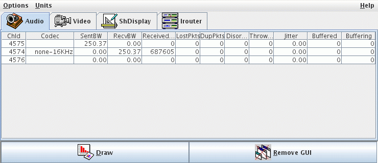
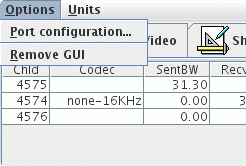
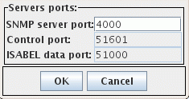
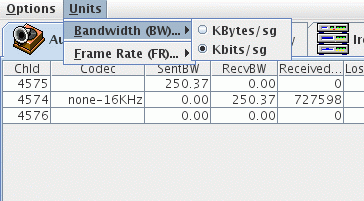
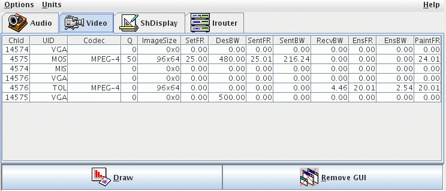
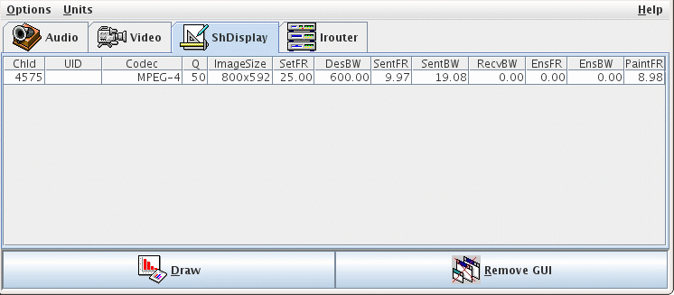
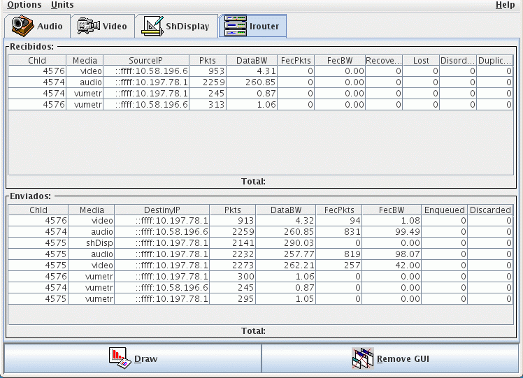
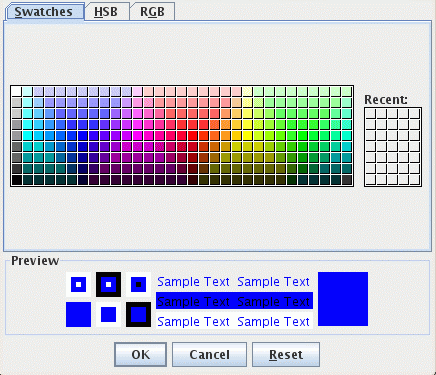
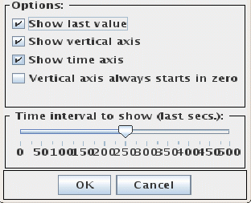

|
Es la que nos permite ver los datos de que dispone
el agente sin necesidad de usar un gestor SNMP. Por tanto no es imprescindible
activarla cuando se pretende trabajar desde un gestor; es más se
recomienda no lanzarla, ya que consume muchos recursos del sistema. Para
activarla existen dos métodos:
-
Con el parámetro -printStats en el momento de lanzar el agente.
-
Cuando el agente ya está lanzado, con el comando de control snmp_gui(1).
Una vez que se lanza la interfaz gráfica
del agente, lo primero que nos aparece es la ventana principal. Para hacerlo,
no es necesario que ISABEL esté ejecutándose. La diferencia
está, en que mientras ISABEL no se ejecute, todas las tablas y formularios
aparecerán en vacíos.
 5.1.- Ventana principal 5.1.- Ventana principal
Podemos verla en la siguiente figura. Se
trata de una interfaz gráfica muy sencilla, y bastante intuitiva.
Se divide en 3 zonas:

5.1.1.- Zona de Menús
Se encuentran en la parte superior de la pantalla.
Algunas de las funciones que ofrecen también son accesibles mediante
los botones inferiores, otras sin embargo, son solo accesibles a través
de los menús. Veamos el contenido de cada uno de ellos:
- Menú Archivo

- Configuración
puertos...: da acceso a una nueva ventana en la que podemos ver los
puertos de atención de los distintos servidores, y en el caso del
servidor SNMP, podemos modificar el valor, para que este comience a esperar
mensajes SNMP en un nuevo puerto. Si al arrancar hemos usado la opción
-shell también aparecerá reflejado con un mensaje
en el espacio reservado al servidor de control.

- Eliminar
GUI: desactiva la interfaz gráfica del agente. Tiene el mismo
efecto que el comando de control snmp_gui(0).
- Salir:
cierra por completo todo el agente SNMP. Dejando de servir estadísticas
a gestores SNMP, aunque los componentes sigan recogiendo estas.
- Menú Unidades
Permite escoger las unidades en que aparecen los datos en las distintas
tablas, para los anchos de banda y los frame rates. En el primer caso son
tres las opciones que ofrece: Kbytes/sg, Kbits/sg y centésimas
de Bytes/sg. En el caso del frame rate las unidades son siempre
las mismas: frames/sg. Cuando se seleccionan unas unidades estas
tienen para el ancho de banda estas se aplican a todos los anchos de banda
de todos los canales de todos los componentes.

- Menú Ayuda :
Ofrece dos opciones: Manual de usuario que nos presenta
esta misma documentación en formato HTML; y Acerca de donde podemos
encontrar información del autor y la versión del programa.
5.1.2.- Zona Central: presentación de datos
Es la zona en la que van a aparecer todas las medidas
disponibles en cada momento. Se trata de un panel con pestañas,
en las que cada una de ellas nos da acceso a la información de un
componente distinto.
- Componente de Audio:
Presenta una tabla donde cada fila de datos se corresponde con un
canal activo en el audio.
Por cada canal los datos que tenemos accesibles son:
- ChIndex: identificador de canal
- sentBW: ancho de banda de datos enviado
- recvBW: ancho de banda de datos recibidos
- DiscardedPkts: paquetes descartados (duplicados)
- LostPkts: paquetes perdidos (si llegan tarde, luego
se restan y se añaden al campo anterior)
- jitter: jitter en el canal
- Buffer: capacidad de almacenamiento
- Componente de Video:

Presenta una tabla donde cada fila de datos se corresponde con un
canal activo en el video.
Por cada canal los datos que tenemos accesibles son:
- ChIndex: identificador de canal
- desFR: frame rate deseado
- desBW: ancho de banda deseado
- sentFR: frame rate de datos enviados
- sentBW: ancho de banda de datos enviado
- recvBW: ancho de banda de datos recibidos
- ensFR: frame rate de datos ensamblados
- ensBW: ancho de banda de datos ensamblados
- paintFR: frame rate de datos pintados o fotogramas
por segundo que se pintan para ese canal de video.
- Componente de Shared-Display:

Presenta una tabla donde cada fila de datos se corresponde con un
canal activo en el shared display.
Por cada canal los datos que tenemos accesibles son:
- ChIndex: identificador de canal
- desFR: frame rate deseado
- desBW: ancho de banda deseado
- sentFR: frame rate de datos enviados
- sentBW: ancho de banda de datos enviado
- recvBW: ancho de banda de datos recibidos
- ensFR: frame rate de datos ensamblados
- ensBW: ancho de banda de datos ensamblados
- paintFR: frame rate de datos pintados o fotogramas
por segundo que se pintan para ese canal de video.
- Componente de Irouter:

Presenta dos tablas, la superior para datos recibidos, la inferior
para datos enviados. Cada fila de datos se corresponde con un
canal activo en el irouter.
Por cada canal receptor los datos que tenemos accesibles son:
- ChId: número de canal (SSRC en RTP)
- Media: nombre del medio
- SourceIP: dirección IP de donde procede el flujo
- Pkts: número de paquetes en intervalo
de muestreo (3 segs.)
- DataBW: ancho de banda medio de datos recibidos
en intervalo de muestreo (3 segs.)
- FecPkts: número de paquetes de protección FEC
en intervalo de muestreo (3 segs.)
- FecBW: ancho de banda medio de protección FEC
recibidos en intervalo de muestreo (3 segs.)
- Lost: paquetes perdidos totales en tráfico RTP
- Disordered: paquetes desordenados totales en tráfico RTP
- Duplicated: paquetes duplicados en tráfico RTP
- Jitter: jitter medio de llegada de paquetes en el
intervalo de muestreo (3 segs.) en tráfico RTP
NOTA: Si existe un hueco en los números de secuencia,
el paquete se considera perdido. Si llega posteriormente,
se elimina de los perdidos y se añade a los desordenados.
Por cada flujo enviado los datos que tenemos accesibles son:
- ChId: número de canal (SSRC en tráfico RTP)
- Media: nombre del medio
- DestinyIP: dirección IP donde se dirigen los datos
- Pkts: número de paquetes totales en el
intervalo de muestreo (3 segs.)
- DataBW: ancho de banda medio de datos enviados en
el intervalo de muestreo (3 segs.)
- FecPkts: número de paquetes de protección FEC
en intervalo de muestreo (3 segs.)
- FecBW: ancho de banda medio de protección FEC
enviado en intervalo de muestreo (3 segs.)
- Discarded: n&uacte;mero de paquetes totales descartados
- Otros Componentes:
En el futuro se piensa
añadir la gestión de otros componentes de ISABEL, a los que
accederemos pulsando en la pestaña correspondiente. El contenido
del nuevo panel, lo definirá aquel que integre el nuevo componente
y no tiene porque tratarse exclusivamente de una tabla, sino que puede
ser un formulario, o incluso un gráfico.
5.1.3.- Zona Inferior: Botones
En la parte inferior de la interfaz gráfica
aparecen tres botones que tienen las siguientes funcionalidades:
- Dibujar :
Permite ver la representación gráfica de la evolución
temporal del dato que previamente hayamos seleccionado de alguna de las
tablas. No todos los datos son susceptibles de ser representados gráficamente;
en caso de haber escogido alguno que no lo sea, nos saldrá una mensaje
de aviso.
- ElimiarGUI :
Elimina la interfaz gráfica que el agente. Es exactamente
igual que la opción del menú archivo o que el comando de
control snmp_gui(0).
- Salir :
Cierra todo el agente, al igual que la opción de igual nombre del
menú archivo o que el comando de control snmp_quit().
5.2.- Ventana de Gráficos
Es el tipo de ventanas en las que se realizan las
representaciones gráficas de la evolución de las estadísticas.
Su aspecto para un ancho de banda es el de la figura X.El título
de la ventana nos informa en todo momento de cual es el dato que estamos
representando en su interior.
Para poder dibujar la evolución de un dato
debemos seleccionar el dato de la tabla haciendo un simple clic sobre la
celda, y posteriormente pulsar el botón dibujar. Podemos tener abiertas
tantas ventanas de representación gráfica como queramos.
Dependiendo de que el dato que vamos a representar
sea un ancho de banda, un frame rate o paquetes/sg, el formato de esta
ventana será un poco distinto. Al igual que hicimos con la ventana
principal vamos a ver las distintas partes en que se dividen estas ventanas.
|
5.2.1.- Zona de Menús
Son dos los menús disponibles en estas ventanas.
El menú archivo que nos permite cerrar la ventana en la que está
el menú (Cerrar), eliminar la interfaz gráfica por completo
(Eliminar GUI), o cerrar todo el agente (Salir).
El otro menú, el de ayuda nos permite acceder
a este manual de usuario en formato HTML, y también nos permite
obtener información sobre la versión del programa y el autor.
5.2.2.- Zona de Unidades
Es la parte superior izquierda de la ventana de dibujo.
Esta es la única parte de la ventana que varía según
el tipo de información que se esté representando. Así
si se trata de un frame rate o de paquetes/sg, se trata de un subpanel
no interactivo donde aparecen las unidades del eje Y de la representación.
Si lo que estamos dibujando es la evolución temporal de un ancho
de banda, entonces nos ofrece la posibilidad de escoger entre tres unidades
para el eje Y. Las unidades que aquí escojamos sólo afectan
al dibujo contenido en esta ventana, y no al resto de los dibujos o a los
datos de las tablas.i
5.2.3.- Zona de Configuración
Es el subpanel situado en la parte suprior derecha,
y contiene dos botones que dan acceso a sendas ventanas de configuración.
- Botón Color...:
Nos permite escoger el
color de la gráfica, esto nos ayuda a distinguir unos dibujos de
otros con un simple vistazo, sin necesidad de estar mirando el título
de la ventana en cada momento.

- Botón Otros...:
Nos da acceso a una ventana donde podemos configurar
los siguientes aspectos del gráfico:

- Si
queremos o no, que aparezca en la parte inferior de la ventana de representación
gráfica el valor del último punto pintado.
- Si
queremos o no, que aparezcan unidades y divisiones en el eje vertical.
- Si
queremos o no, que aparezca la escala de tiempos sobre el eje horizontal.
- Si
queremos o no, que el eje vertical comience siempre en cero, o que se encoja
de forma que entren todos los puntos, pero las diferencias entre ellos
se magnifiquen lo máximo posible.
- Por
último tenemos un slider en el que podemos seleccionar el
tiempo que queremos que aparezca en pantalla. Si seleccionamos 100, veremos
los últimos 20 puntos, pues el intervalo entre puntos es de cinco
segundos.
Cuando las necesidades sean mayores, como es fijar
alarmas, o almacenar en un fichero los datos de una sesión, deberá
recurrirse al uso de gestores SNMP. La interfaz gráfica del agente
está diseñada pensando en que se use en aquellos momentos
donde únicamente se pretende realizar unas pequeñas pruebas
y no se requiere la gran cantidad de funcionalidades que ofrecen los gestores
que actualmente hay en el marcado.
|